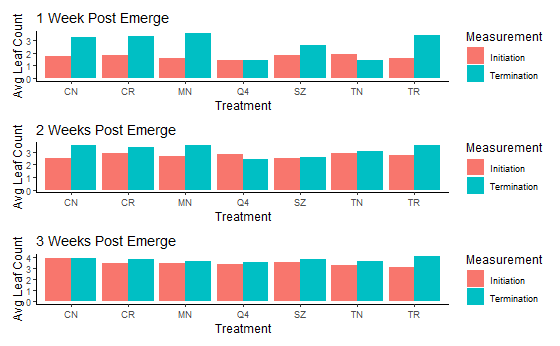

Project Objectives
Primarily, this project was conducted to investigate the viability of Blue grama as a low-mainteneance choice for lawns in the transition zone of the United States. This viability was determined through response of the grass to selection different post-emerge herbicides, and the manipulaiton of planting application dates.
Experimental Design
- Cultivar x 1: Birdseye Blue grama
- Herbicides x 7: Control (no herbicide), Quicksilver,
Manor, Q4+, Speedzone, Tenacity, Trimec Classic
- Planting Application Dates x 3: 1, 2, and 3 weeks after emergence
- Replications x 4
- Runs x 2
Results
Overall & Net Growth
In run 1 (Ava), only control and CR (carfentrazone) witnessed consistent growth throughout the entire timeframe for all three planting application dates. For run 2 (Will), none of the treatments saw consistent growth throughout the entirety of the timeframe for all three planting dates. For both runs, growth was not consistent in treatments other than control or quicksilver.
Growth Timeseries
Planting date seemed to have a noticeable effect on leaf height throughout the timeframe. Notably, herbicide application 1 week after emergence led to more varied results in final leaf height as compared to application 2 or 3 weeks after emergence.
Percent Injury
For both runs, CR and MN both had the lowest percent injury rating when averaged across all 3 planting application dates. These treatments both only have a single active ingredient, carfentratzone and metasulfuron respectively. While TN similarly has only a single active ingredient (mesotrione), it had the highest average percent injury across all 3 planting application dates in both run 1 and 2.
Leaf Count
While run 1 witnessed an increase in leaf count throughout the 21 days for all three weeks, run 2 had more varied results. Namely, there were decreases (TN 1WPE & Q4 2 WPE), as well as some counts that remained constant (Q4 1 WPE & CN 3 WPE).
